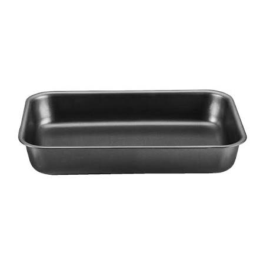
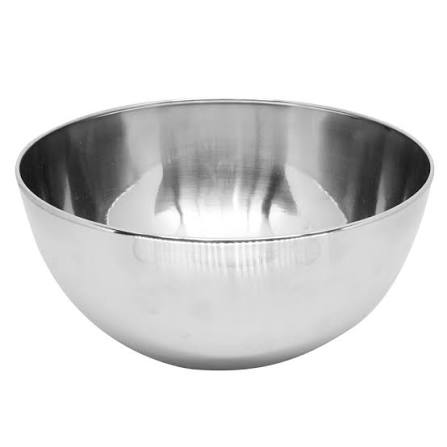
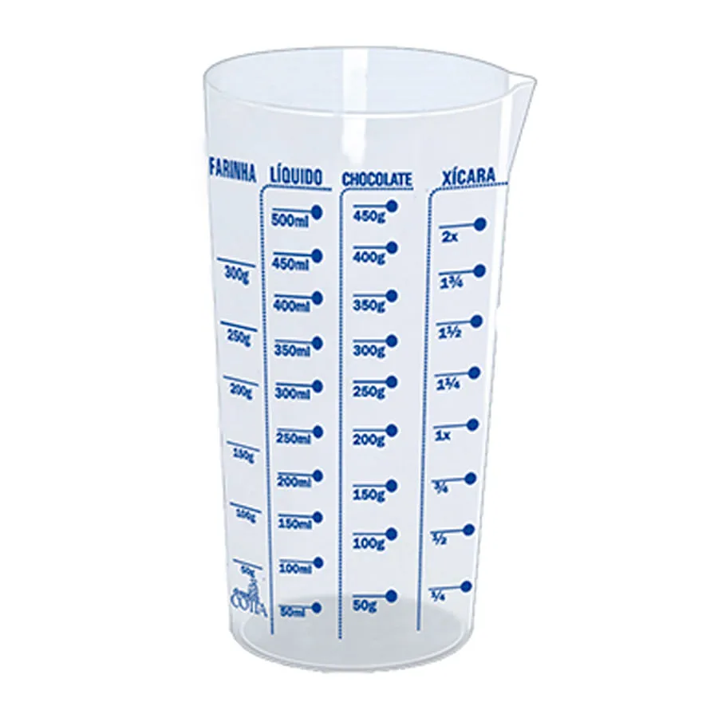
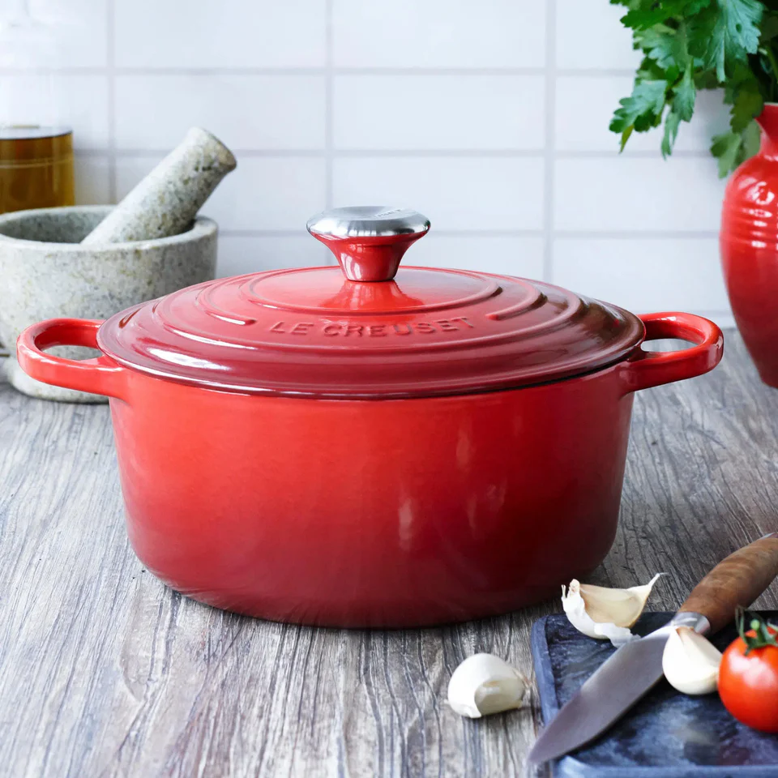

1 prato cheio (350g) de queijo meia crua e/ou mussarela ralado no ralador
1 ou 2 ovos
1/2 de óleo
1 pacote de queijo ralado parmesão
Utensílios

Assadeira

Bowl

Copo medidor

Panela
Modo de Preparo
Tempo médio: 1 hora
Primeiro, coloque o leite e o óleo em uma panela pra esquentar, desligue o fogo imediatamente assim que começar a ferver (você verá umas bolinhas do leite subindo).
Em uma tigela grande, coloque o polvilho e o sal, e misture bem, logo em seguida, despeje o conteúdo da panela ainda quente, misture bem, primeiro com uma colher e depois com a mão.
Em seguida coloque o queijo ralado e um pouco do queijo do prato e também 1 ovo, continue misturando bem.
Coloque o resto do queijo e verifique se a massa esta com uma textura boa, nem muito oleosa e nem muito seca.
Se você sentir que está muito seca, coloque outro ovo, se ela ficar oleosa, coloque mais um pouco de polvilho.
Essa massa deverá soltar da tigela e também da sua mão.
Experimente a massa e veja se esta boa de sal, algumas pessoas gostam de colocar um pouco mais de sal.
Agora é só fazer bolinhas e colocar na assadeira, deixando um pequeno espaço entre um pão e o outro.
Não é necessário untar a assadeira.
Deixe no forno em temperatura média (230°) até dourar um pouco.